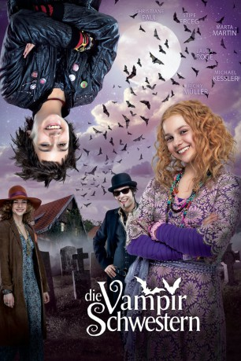

#9239 Die Vampirschwestern
 gesehen am 06.09.2018
gesehen am 06.09.2018
 
 IMDB-Wertung: 5.7 / 10
IMDB-Wertung: 5.7 / 10  Metascore: 0
Metascore: 0 
Der Umzug mit ihren Eltern von Transilvanien nach Deutschland bringt einige Veränderungen für die Halbvampir-Schwestern Silvania und Dakaria. Durften die 12-jährigen Zwillinge vorher fliegen, wann immer es ihnen gefiel, ihre übernatürlichen Kräfte nutzen und an der Decke herumlaufen, so ist diese Zeit nun vorbei. Sie müssen ihre Andersartigkeit vor allen Menschenaugen verbergen. Dabei macht ihnen besonders Sorge, dass ihr Nachbar Dirk Van Kombast auch noch ein Vampirjäger ist. Während Silvania begeistert alles Neue in der Schule und in der Kleinstadt entdecken möchte, ist ihre Schwester Dakaria sehr viel zurückhaltender und gewöhnt sich nur langsam an die neue Umgebung. Doch schon ihre ersten Tage in der Schule bergen einige Abenteuer.
Jahr: 2012
Dauer: 97 Minuten
FSK: 0
Land: Deutschland Studio: Sony Pictures ReleasingTonspuren:
Untertitel:
Auflösung: 1080p (1920x1040) Größe: 5652 MB
Genre: Drama, Komödie, Abenteuer, Fantasy, Familie
Regisseur: Wolfgang Groos
Drehbuch: Ursula Gruber
Soundtrack: Helmut Zerlett
Darsteller:
 Christiane Paul als Elvira Tepes
Christiane Paul als Elvira Tepes Stipe Erceg als Mihai Tepes
Stipe Erceg als Mihai Tepes Richy Müller als Ali Bin Schick
Richy Müller als Ali Bin Schick- Marta Martin als Silvania Tepes
- Laura Antonia Roge als Dakaria Tepes
- Michael Kessler als Dirk van Kombast
- Jamie Bick als Helene Steinbrück
- Jonas Holdenrieder als Ludo Schwarzer
- Jeremias Meyer als Jacob Barton
- Maj Jablonski als Missy Master
- Robin Kirsch als Killa K
- Xaver Wegler als BH
- Viola von der Burg als Frau Renneberg
- Christian Koch als Hausmeister Reiser
- Regine Vergeen als Oma Rose
- Hans-Peter Deppe als Opa Gustav Tepes
Datei: X:\Kinder Collections\Vampirschwestern\Vampirschwestern, Die (2012, FSK0, 1920x1040).mkv seit 20.07.2018
Festplatte: Kinder-Filme+Trick
 Alle Filme aus Gruppe 'Kinder Collections\Vampirschwestern'
Alle Filme aus Gruppe 'Kinder Collections\Vampirschwestern'